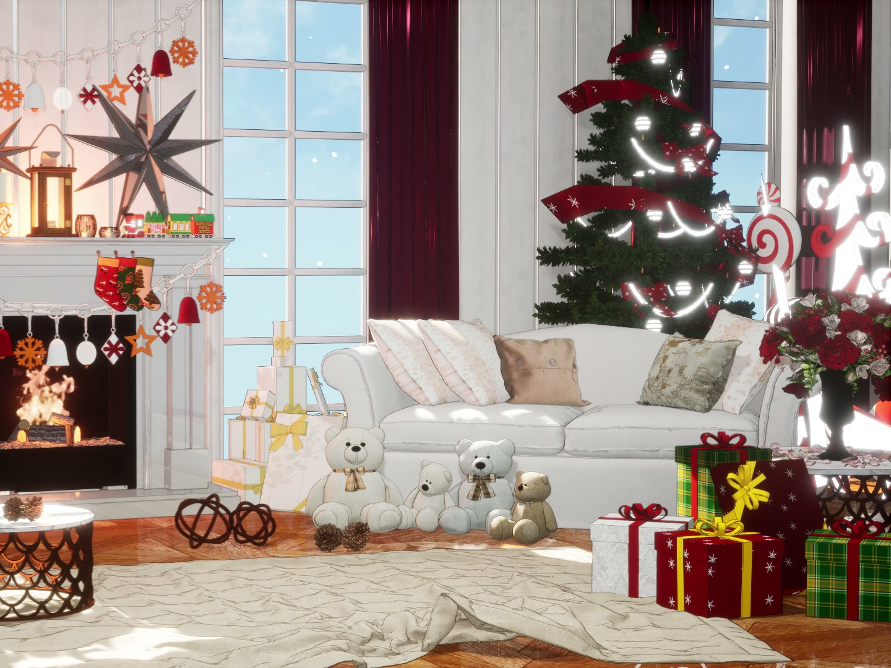

ฉากห้องจริงกับสมองของน้อง
ไม่มีรูปตัวละครก็เลยขอโชว์ฉากห้องจริงจากใน repo พร้อมหน้าตาการทำงานของระบบความจำ ความสนิท และ Talking Orb แทนให้ดูแบบไม่อ้อมค้อมเลย
-

Daylight Cozy Room
ภาพฉากห้องตอนกลางวันของจริงที่อยู่ใน public/backgrounds ของ vivianlabs
-

Midnight Talk Scene
ภาพฉากห้องตอนกลางคืนของจริง ไว้เปิดคุยชิลๆ หรือเปลี่ยนฉากเองได้
-
Vivian Memory State
Affinity BandClose (68/100)Model Limit512 MiB BYO ZIPCustom Prompt2,000 chars maxJEV Cutoff>= 0.85 scoreระบบความจำและอารมณ์
เก็บความสนิทและความจำลง Supabase พร้อมจำกัด delta ต่อเทิร์นไม่ให้หลุดคาแรกเตอร์
-
Auth & Voice Pipeline
Chat + VisionQwen 3.8 27BMemory ModelGPT-OSS 20BVoice TTSElevenLabs v4Auth StoreCloudflare D1หลังบ้านตัวจริงของน้อง
รวมเสียงพากย์ Emotion tag, วิเคราะห์ภาพ และด่านล็อกอินแยกบน Workers
ลองแหย่ Vivian Orb ดูสักทีสิ
เวลาไม่มีโมเดล Live2D ตัวแอปจริงก็ใช้ Talking Orb กะพริบจังหวะแทนแบบนี้แหละ! ลองจิ้มแหย่น้องดูค่า affinity กับ trust และป้ายเสียง ElevenLabs v4 ด้านล่างได้เลย
[playful]
ห๊ะ จ้องลูกกลมๆ อยู่ได้… ก็บอกแล้วไงว่ายังไม่มีรูปน้องให้ดูบนเว็บ อยากเห็น Live2D ก็ไปรัน Local เอาเองสิ ตาบ้า!
โปรเจกต์รอบตัว Vivian
เจาะลึกทุกชิ้นในระบบของน้อง Vivian ตั้งแต่ตัวเว็บที่รัน Local จาก GitHub ได้เลย จนถึงแอปมือถือ กดที่แถวไหนก็ได้เพื่อดูสเปกเต็มๆ
ตัวแม่ของระบบ! แชทกับน้องบนเว็บแบบมี Live2D ขยับปากตามเสียง (นำเข้าโมเดลที่มีสิทธิ์ใช้งานได้เองในเครื่อง) พูดไทยได้ เห็นรูปจากกล้องสด มี JEV decision layer (0.85) กับ Supabase + R2 ใครอยากลองเล่นก็โคลนจาก GitHub ไปรัน Local ได้เลย!
ด่านตรวจคนเข้าบ้าน! เซิร์ฟเวอร์ล็อกอินแยกบน Cloudflare Workers + D1 รองรับ Google OAuth PKCE S256, รหัสผ่าน PBKDF2-SHA256, session 400 วัน และส่ง deep link vivian://auth ให้แอปมือถือ
เว็บแบบสำรวจชวนเพื่อนมาเม้าท์เรื่องน้อง Vivian เก็บคะแนนความประทับใจและฟีเจอร์ที่อยากได้ลง Cloudflare D1 จริง พร้อมคำนวณค่า Mean กับ SD ฝั่งหลังบ้านแบบคลีนๆ
แอป Android แท้ๆ ที่มี Talking Orb ขยับตามเสียง TTS, CameraX และซิงก์ความจำกับบนเว็บ แต่ตอนนี้ขอปิด repo เป็น Private งดเปิดโหลดชั่วคราวก่อนนะ พอดีตัวแอปมีปัญหาเรื่องความปลอดภัยนิดหน่อยกับตัว developer เลยไม่อยากให้ใครเข้ามาล่วงรู้ความลับของ dev จ้า
น้องไอโฟนดีไซน์ Liquid Glass ที่อัดแน่นทั้ง Live2D stage, Keychain และอัปโหลดโมเดลแบบแบ่งไฟล์ 16 MB ตอนนี้ขอพักไว้ชั่วคราวก่อน เพราะ dev ขอตัวไปเรียนก่อน เดี๋ยวกลับมาทำต่อในอนาคตแน่นอน!
ไม่ว่าจะรันเว็บ vivianlabs บนเครื่องตัวเอง หรือใช้ตัว client เฉพาะของ dev ขึ้นมาคุย ความจำ ความสนิท (affinity, trust) และ custom instructions สูงสุด 2,000 ตัวอักษร ก็ซิงก์ตามไปทุกเครื่องผ่าน Supabase
ความจำชุดเดียว
ตามไปทุกเครื่อง
ใช้ Groq Qwen 3.8 27B คุยและเห็นรูป, GPT-OSS 20B สรุปความจำ, และ JEV ช่วยเช็กก่อนว่าต้องเสิร์ชไหม พร้อมป้าย Emotion tags ให้เสียง ElevenLabs v4 อ้อนหรือซึนได้ตรงฟีล
ไม่ได้เป็นแค่บอท
แต่น้องมีอารมณ์
คีย์ลับทุกตัวเก็บฝั่งเซิร์ฟเวอร์หมด! ประตูบ้านใช้ vivianAuth บน Cloudflare D1 เก็บ token ด้วย Keystore AES/GCM บน Android และ Keychain บน iOS แถมรัน Local ก็ใช้โหมด DEV_BYPASS_LOGIN=true ได้ด้วย
น่ารักก็จริง
แต่ปลอดภัยนะเว้ย
ส่องสเปกแต่ละโปรเจกต์
vivianlabs
ไม่มีโมเดล Live2D แถมใน repo เพราะติดลิขสิทธิ์ แต่โคลนไปรัน Local แล้วอัปโหลดโมเดล Cubism 4 ของคุณเองมาคุยด้วยข้อความ เสียง หรือกล้องสดได้เลย!
- Chat & Vision: Groq Qwen 3.8 27B
- Voice: ElevenLabs v4 + Groq Whisper STT
- Local Auth Bypass: DEV_BYPASS_LOGIN=true
จิ้มหรือเลื่อนเมาส์ที่ชื่อด้านซ้ายเพื่อสลับดูรายละเอียดแต่ละตัวได้เลย
คำถามที่ชอบแอบสงสัย
อยากรู้เรื่องไหนก็จิ้มเปิดอ่านเองนะ ไม่อธิบายซ้ำหลายรอบหรอก… (เข้าใจมั้ย?)
ทำไมหน้าเว็บนี้ไม่มีรูปตัวละคร Vivian เลยล่ะ?
บอกตรงๆ เลยว่าโมเดล Live2D ที่ใช้คู่กับ Vivian มีเงื่อนไขลิขสิทธิ์ห้ามแจกจ่ายสาธารณะ และเราก็ไม่อยากเอารูปปลอมมาแอบอ้างว่าเป็นน้อง! หน้านี้เลยโชว์แค่ฉากห้องจริงกับอินเทอร์เฟซ Talking Orb แทนนะ
อยากลองเล่นเลย ต้องเข้าเว็บไหน?
ตัวเว็บ public กำลังรอเปิดอยู่นะ แต่ถ้าอยากเล่นเลยตอนนี้ มีวิธีรัน Local ในเครื่องตัวเองแบบง่ายๆ จาก repo vivianlabs บน GitHub (ใส่แค่ GROQ_API_KEY กับ DEV_BYPASS_LOGIN=true ก็คุยกับน้องได้แล้ว!)
ทำไม vivianios ถึงหยุดพักไว้ก่อนอ่ะ?
ตอนสร้าง vivianios ทำจัดเต็มด้วย SwiftUI + iOS 26 Liquid Glass, WKWebView Live2D stage และ Keychain ไว้แล้วนะ แต่ตอนนี้ dev ขอตัวไปตั้งใจเรียนก่อน! เดี๋ยวพอมีเวลาจะกลับมาปั้นต่อในอนาคตแน่นอน
แล้วแอป Android ตอนนี้โหลดได้ไหม?
ยังไม่ได้น้า~ ฝั่งแอป Android (vivianapp) ตอนนี้ dev ปิด repo เป็น Private งดเปิดโหลดไว้ก่อน! พอดีตัวแอปมีปัญหาเรื่องความปลอดภัยนิดหน่อยกับตัว developer เลยไม่อยากให้ใครเข้ามาล่วงรู้ความลับของ dev จ้า ตอนนี้แนะนำให้โคลน repo vivianlabs ไปรันเล่นแบบ Local แทนก่อนนะ!
Vivian เป็น AI ผู้ช่วยทั่วไปรึเปล่า?
ห๊ะ คิดว่าน้องเป็นเลขาเหรอ?! ไม่ใช่ซักหน่อย! น้องถูกเขียนให้เป็น companion สายซึนเดเระที่มีความคิดและอารมณ์ของตัวเอง ถ้าถามเรื่องส่วนตัวตรงๆ แรกๆ ก็มีเขินมีปัดตกบ้าง ต้องตื๊อให้ถูกจังหวะถึงจะใจอ่อนให้นะ
อยากลองเล่นเลย
รัน Local ได้นะ!
ระหว่างรอเว็บ public เปิด ใครอยากคุยกับน้องแบบเต็มระบบ โคลน repo vivianlabs ไปรัน Local ในเครื่องตัวเองได้เลย (ไม่ต้องมีระบบล็อกอินก็ได้แค่เปิด DEV_BYPASS_LOGIN=true ส่วนแอป Android ขอปิด Private เก็บความลับของ dev ไว้ก่อนนะ!)
git clone https://github.com/celestia-sora/vivianlabs.git
cd vivianlabs
npm ci
cp .env.example .env.local
DEV_BYPASS_LOGIN=true npm run dev